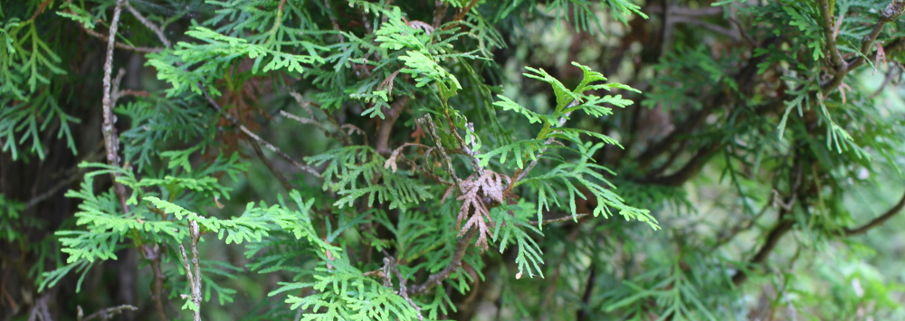

Beautiful sites in Stockholm
There are lots of beautiful places in Stockholm to visit, just go near one and you will find plenty of information here
There are lots of beautiful places in Stockholm to visit, just go near one and you will find plenty of information here
Stockholm City Hall (Swedish: Stockholms stadshus or Stadshuset locally) is the building of the Municipal Council for the City of Stockholm in Sweden. It stands on the eastern tip of Kungsholmen island, next to Riddarfjärden's northern shore and facing the islands of Riddarholmen and Södermalm. It houses offices and conference rooms as well as ceremonial halls, and the luxury restaurant Stadshuskällaren. It is the venue of the Nobel Prize banquet and is one of Stockholm's major tourist attractions.

KTH Royal Institute of Technology (KTH, Swedish: Kungliga Tekniska Högskolan) is a university in Stockholm, Sweden, specialized in Engineering and Technology, that ranks highest in northern mainland Europe in its academic fields.[3] The current King of Sweden Carl XVI Gustaf is its High Protector. The core of the KTH Royal Institute of Technology was the Laboratorium Mechanicum for research and teaching in mechanics, founded in Stockholm in 1697 by Cristopher Polhem after his extensive trips, studies and research abroad. This core was later called the Mechanical School prior to its 1827 transformation into The Technological Institute, Sweden's first institute of technology (polytechnic) by decision of the King Charles XIV John of Sweden, also Marshal of France, modeled after École Polytechnique which was founded by Napoleon Bonaparte in Paris, France in 1794. The Technological Institute changed its name to the present Kungliga Tekniska Högskolan (KTH Royal Institute of Technology) in 1877 by decree of King Oscar II. The Laboratorium Mechanicum was itself in 1925 handed over from the KTH Royal Institute of Technology to the Swedish Museum of Technology in Stockholm, Sweden.